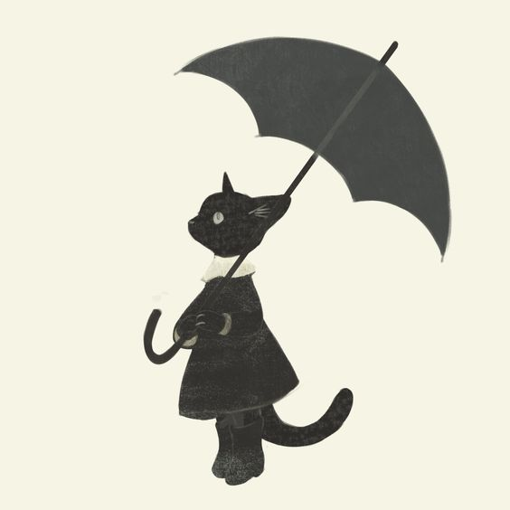

Ellay-The vampire
During the 18's vampires were a growing concern.No one knew how a cat would get away with killing other cats without getting caught.But the chances of them getting caught were slim as they belonged to one of the noble family that of a Marquess.Ellay was a cat that grew up in that household who never had the luxury of going out on a sunny day since her childhood which led her to wish for a day to come where she bask in the sunlight.Though blood is her only source of food,she has an innocent dream.
